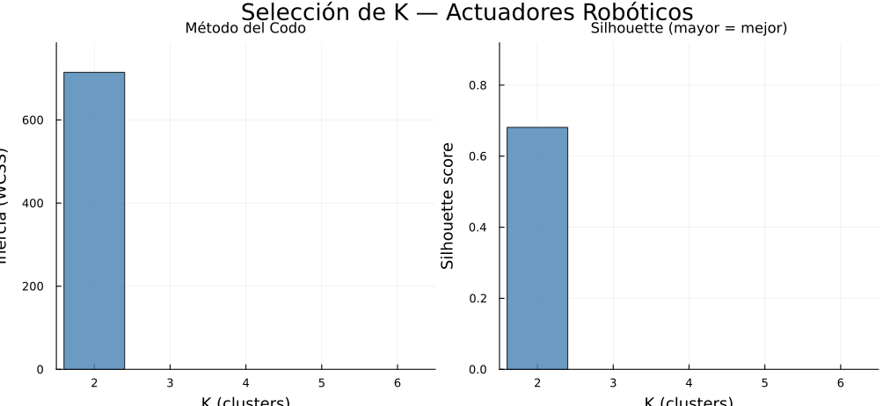
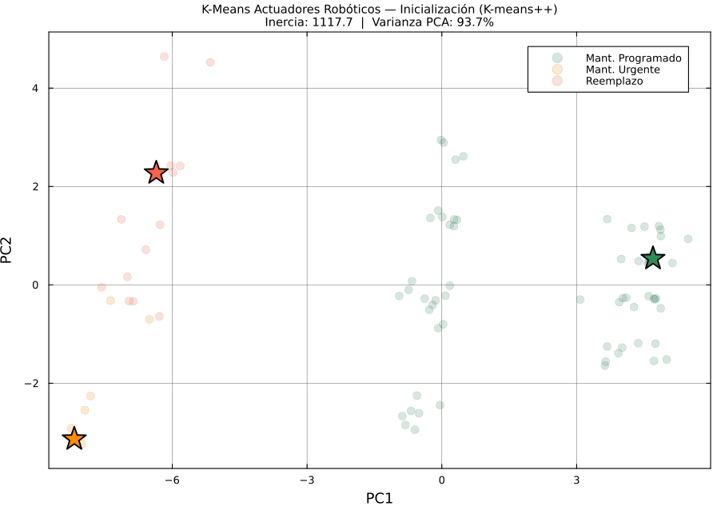

Inercia + silhouette para K ∈ [2,6]

Convergencia de Lloyd en proyección PCA 2D
El codo es pronunciado (Δ²J = 253.3) y el silhouette se mantiene alto: K‑Means elige 3, igual que los 3 estados del negocio.
K = 2sil 0.681 · iner 714.6
K = 3 ◄sil 0.672 · Δ²J 253.3
K = 4sil 0.660 · iner 268.8
K = 5sil 0.638 · iner 201.9
K = 6sil 0.655 · iner 166.1